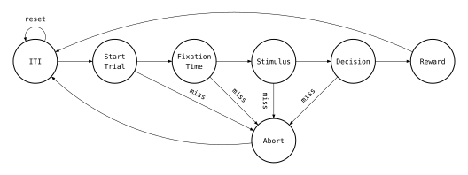

State Machine
The sound lateralization task implemented in the current project, which is based on [1], was designed as a state machine, where the progression through the different states is driven by certain events. The figure below is a representation of the state machine that describes this task.

From the figure, notice that from most states there are two possible states that these states can progress to. This happens because there are certain conditions that have to be met in order for the state machine to progress to the next "desired" state.
A brief description of each individual state can be found below.
Inter-Trial Interval (ITI)
The Inter-Trial Interval (ITI) state is, as the name suggests, the time interval that separates two consecutive trials.
Since there is a need to setup each trial (for example, to (re)set some parameters) and the duration of the ITI is, typically, a few seconds, this state is also a preparation of the new trial.
If the iti.can_reset parameter (located in the training.csv file) is True, this state resets everytime the animal is poking the CNP before the ITI is over.
Start Trial
A trial starts when the rodent pokes his nose in the central nose port (CNP). So this state consists of waiting that the rodent starts poking the CNP. If there is a poke within a certain time limit (determined by the max_wait parameter of the training.csv file), the task continues as it is supposed to, otherwise this trial is aborted.
Fixation Time
This is the state that precedes the stimulus presentation. The rodent must stay in the CNP during the entire time this state lasts so that the task progresses as expected, otherwise the trial is aborted.
The fixation time is divided into 2 parts: the Opto Onset Time and the Sound Onset Time. The fixation time starts in the Opto Onset Time. When it ends the optogenetics stimulation starts (if it applies to the current trial) and the Sound Onset Time starts. When it ends, the sound stimulus is presented.
Each of these parts is composed by the sum of a fixed duration and random variable modeled by a exponential distribution.
\(t_\text{Opto Onset Time} = t_\text{Base Fix} + (X ∼ \text{Exp}(\lambda)) = t_\text{Sound Onset Time}\) \(t_\text{Fix} = t_\text{Opto Onset Time} + t_\text{Sound Onset Time}\)
The advantage of modelling the fixation time with the exponential distribution is that it has a constant hazard rate, which in practice means, in the animal's perspective, that the probability of the sound starting (and therefore the fixation time ending) at any time given that a certain amount of time has already passed is constant. This way, it's difficult for the animal to predict when the sound is going to start.
Stimulus
This is the state where the stimulus is presented. The stimulus stops when either the rodent leaves the CNP (if reaction_time.turn_sound_off is True) or when the animal enters one of the LNP's (if reaction_time.turn_sound_off is False) or when the defined presentation time elapses (the presentation time is defined by reaction_time.max_value).
If the animal leaves the CNP before the minimum reaction time (defined by reaction_time.min_value) or after the maximum reaction time (defined by reaction_time.max_value), the trial is aborted.
Decision
In this state, the animal has to pick the side (left or right) which corresponds to the speaker that played the loudest sound by poking in either lateral nose port (LNP).
If the animal pokes either LNP before the minimum movement time or after the maximum reaction time, the trial is aborted. This also happens when the animal pokes in one of the LNPs but doesn't stay in it for the minimum required time (lnp_time.min_value).
Reward
The Reward state evaluates whether the rodent got the answer right or not. In case the answer is wrong, a penalty time is applied (10 seconds for instance). If the answer is right, the animal gets the reward (water). This is the final state of a successful trial.
Abort
The Abort state is triggered when some condition is not met in one of the previous states. This state consists of a small time penalty. The penalty time is defined by the penalty_time.abort parameter of the training.csv file, unless a fixation abort occurred. If that's the case, then the penalty time is defined by penalty_time.fixation_abort. This is the final state of an unsuccessful trial.
References
[1] J. L. Pardo-Vazquez et al., “The mechanistic foundation of Weber’s law,” Nat Neurosci, vol. 22, no. 9, pp. 1493–1502, Sep. 2019, doi: 10.1038/s41593-019-0439-7.